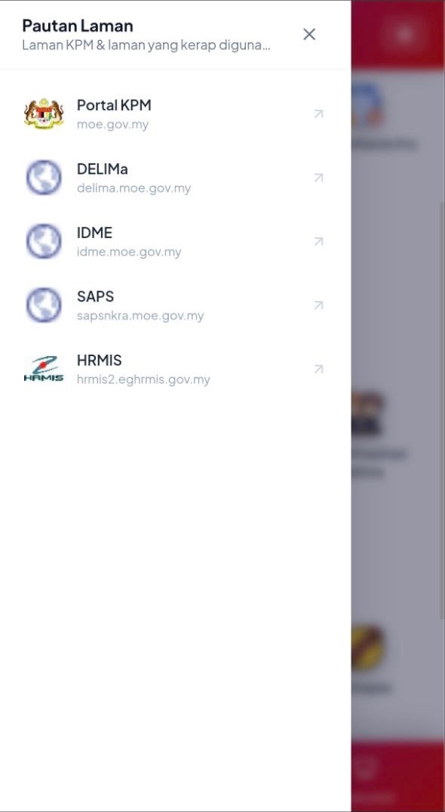
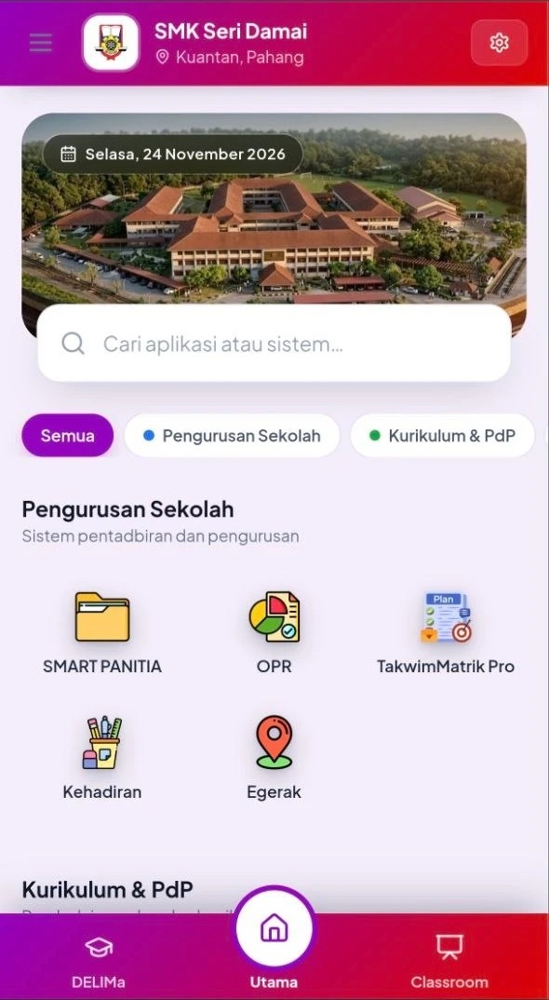
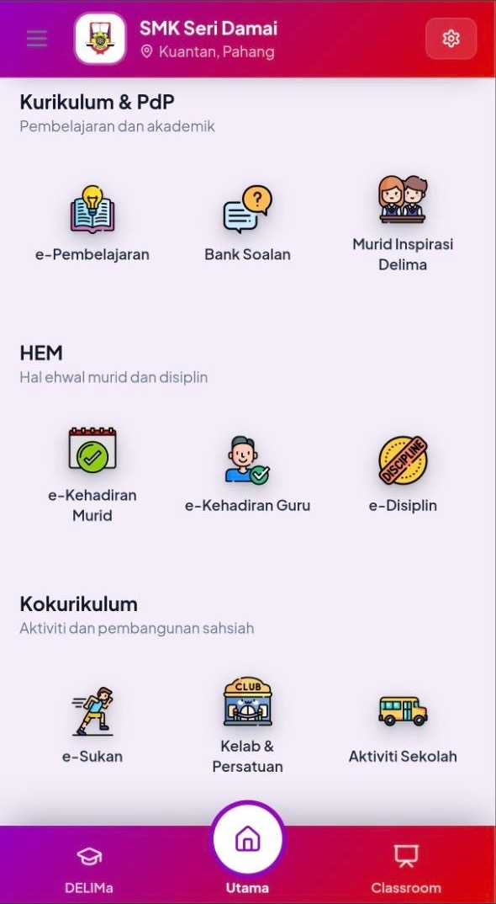
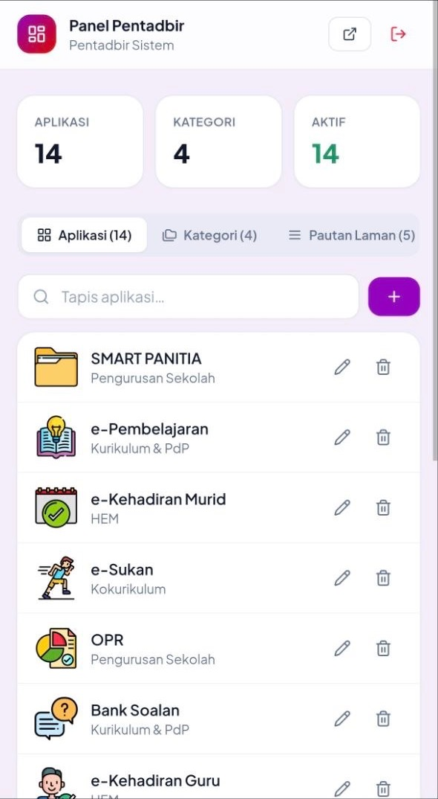

Tak perlu lagi simpan berpuluh pautan dalam WhatsApp atau bookmark. NeoLauncher kumpulkan semua aplikasi sekolah — SMART PANITIA, kehadiran, e-Disiplin, DELIMa, Classroom — dalam satu portal berjenama sekolah anda sendiri.



Contoh sistem yang dikumpulkan dalam satu portal
Guru dan staf sekolah guna lebih 10 sistem berbeza. Pautan tercicir dalam grup WhatsApp, ditanya berulang kali, dan hilang bila tukar telefon.
Direka untuk guru yang sibuk: buka, cari, tekan. Selesai.
Susun sistem mengikut Pengurusan, Kurikulum, HEM, Kokurikulum atau apa sahaja kategori sekolah anda.
Taip beberapa huruf, aplikasi terus muncul. Tak perlu ingat di kategori mana ia disimpan.
Muat naik logo, gambar banner sekolah, dan pilih warna tema. Portal nampak macam sekolah anda yang bina.
Menu sisi untuk laman yang kerap diguna — Portal KPM, DELIMa, IDME, SAPS, HRMIS — lengkap dengan ikon laman.
Butang pantas di bawah skrin telefon untuk DELIMa dan Google Classroom. Terasa macam aplikasi sebenar.
Tambah, sunting atau padam aplikasi terus dari telefon. Dilindungi kata laluan, hanya admin boleh ubah.
Banner sekolah, tarikh hari ini, kotak carian dan ikon aplikasi berwarna — semuanya dalam satu skrin telefon.
Kurikulum, HEM, Kokurikulum dan Pengurusan — setiap unit tahu di mana sistem mereka berada.
Menu sisi khas untuk laman rasmi yang guru buka hampir setiap hari, lengkap dengan logo laman tersebut.

Tak perlu buka komputer. Tambah sistem baharu, tukar pautan atau ikon dalam beberapa saat.
Masa mencari pautan nampak kecil. Darabkan dengan semua guru, setiap hari, sepanjang tahun.
Laraskan slider di bawah.
Anggaran masa dijimatkan sekolah anda
Bersamaan kira-kira 95 hari bekerja yang boleh dialihkan kepada PdP dan murid.
Kos untuk menjimatkannya: RM0Lengkapkan borang ringkas dengan nama sekolah dan maklumat admin. Ambil masa kurang 2 minit.
Portal disediakan dalam Google Drive sekolah anda sendiri. Data sekolah kekal milik sekolah.
Masukkan aplikasi sekolah, kemudian kongsi pautan portal kepada semua guru. Siap!
Tiada pakej tersembunyi, tiada tempoh percubaan, tiada caj tahunan.
Semua ciri, untuk setiap sekolah, tanpa had pengguna.
Tempah SekarangJawapan kepada perkara yang biasa ditanya oleh pentadbir dan guru sebelum mula guna.
Betul. NeoLauncher percuma untuk semua sekolah, tanpa tempoh percubaan dan tanpa yuran tahunan. Portal berjalan di atas akaun Google sekolah anda sendiri.
Tidak. Portal dibuka terus melalui pelayar telefon atau komputer. Guru boleh tekan "Add to Home Screen" supaya ia muncul seperti aplikasi biasa.
Sekolah anda sendiri. Senarai aplikasi, tetapan dan gambar disimpan dalam Google Sheets dan Google Drive milik sekolah.
Tak susah. Panel pentadbir guna borang biasa: isi nama aplikasi, tampal pautan, pilih kategori dan ikon. Boleh dibuat terus dari telefon.
Boleh. Muat naik logo dan gambar banner sekolah, pilih warna tema, dan tetapkan butang pantas di nav bawah (contohnya DELIMa dan Classroom).
Penambahbaikan dihantar secara berpusat, jadi portal sekolah anda dapat ciri baharu tanpa perlu dipasang semula. Data sekolah tidak terjejas.
Isi borang tempahan sekarang. Portal berjenama sekolah anda akan disediakan tanpa sebarang kos.
Tempah Portal Percuma Borang mengambil masa kurang 2 minit